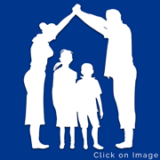

Support with a practical centre
What we do.
Resources are used across child protection, social work, early childhood development and community outreach.
Our services
Support that connects the whole picture.
Foster care
Counselling

Family reconstruction
Crisis intervention
Programmes
Where our work shows up.
Pinocchio Educare Centre
Early childhood development for preschool-age children from low-income families, with learning through play, stimulation, snacks and a balanced meal.
Social work
We investigate abuse and neglect, provide counselling, support foster care and help families rebuild safe relationships.
Outreach programmes
We support schools and communities through counselling, parenting skills, child development workshops, food parcels and practical referrals.
How we respond
Start with the situation in front of you.
Our team works with families and partners to understand what is happening, respond to immediate risk and connect people to the next useful step.
Reported cases are investigated and counselling is offered to people who need support.
Support is available for families and schools when relationships, safety or wellbeing need attention.
We help families work towards safe, supported relationships wherever this is possible.